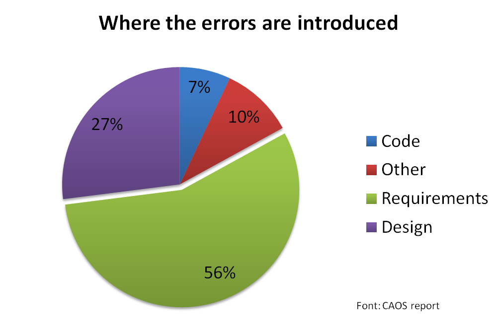

Cucumber
or "How I Learned to Stop Worrying and Love the Bomb"
Leonardo Richter Korndörfer
October 16, 2012
Leonardo Richter Korndörfer
October 16, 2012

Cucumber is a tool that executes plain-text functional descriptions as automated tests.
Cucumber is written in ruby but supports other langages.
Lets see how cucumber tests can be written:
# Explain what the feature is
Feature: Search courses
In order to ensure better utilization of courses
Potential students should be able to search for courses
# Give scenarios
Scenario: Search by topic
Given there are 240 courses which do not have the topic "biology"
And there are 2 courses A001, B205 that each have "biology" as one of the topics
When I search for "biology"
Then I should see the following courses:
| Course code |
| A001 |
| B205 |
So let's list what requisites we have
We could start with the "Bar" artifact:
Feature: Bar
In order to keep track of all bars
The application should be able to manage bars
Scenario: Add a new bar
Given I am on the bars index
And I click in the "new" bar link
And I fill the bar form with name: "The bar",
bartender: "Leonardo" and
minumin age: 21
And I click on "Create Bar"
Then I should see a bar add confirmation message
Scenario: Removing a bar
Given I am on the bars index
And I click in the "destroy" link # anyone
And I confirm my action
Then I should a message that confirms I deleted a bar
More is better
Let's take a moment and deviate from stories to install cucumber in out environment
rspec
capybara
webrat (standalone only)
factory_girl (rails only)
database_cleaner (rails only)
How do I know that?
$ gem dependency cucumber
Add to your Gemfile
# Gemfile
group :test do
gem 'cucumber-rails'
gem 'cucumber'
gem 'database_cleaner'
end
$ bundle install
$ rails generate cucumber:install --rspec --capybara
To prepare your test environment:
$ rake db:test:prepare
$ cucumber features/bar_management.feature
Don't worry if it is all pending. Cucumber will give you lots of sugestions. Easy cake! (or cuke)
Your old friend will never leave you! :-)
Write expressive and robust acceptance tests for a Ruby web application.
When /I sign in/ do
within("#session") do
fill_in 'Login', :with => 'user@example.com'
fill_in 'Password', :with => 'password'
end
click_link 'Sign in'
end
click_link('id-of-link')
click_link('Link Text')
click_button('Save')
click_on('Link Text') # clicks on either links or buttons
click_on('Button Value')
fill_in('First Name', :with => 'John')
fill_in('Password', :with => 'Seekrit')
fill_in('Description', :with => 'Really Long Text...')
choose('A Radio Button')
check('A Checkbox')
uncheck('A Checkbox')
attach_file('Image', '/path/to/image.jpg')
select('Option', :from => 'Select Box')
Show other from: http://rubydoc.info/github/jnicklas/capybara/master
Factory_girl is a fixtures replacement.
Build objects with pre-setted attributes.
Scenario outlines allow us to more concisely express these examples through the use of a template with placeholders, using Scenario Outline, Examples with tables and < > delimited parameters:
Scenario Outline: eating
Given there are cucumbers
When I eat cucumbers
Then I should have cucumbers
Examples:
| start | eat | left |
| 12 | 5 | 7 |
| 20 | 5 | 15 |
In the simplest case, Cucumber runs all the scenarios in all the features that you point it at. By using tags you can be more specific about what is run.
@billing @annoy
Feature: Verify billing
@important
Scenario: Missing product description
Scenario: Several products
cucumber --tags @billing # Runs both scenarios
cucumber --tags @important # Runs the first scenario
cucumber --tags ~@important # Runs the second scenario
# (Scenarios without @important)
Let you run code before and after to modify the behavior of features.
Often defined in your env.rb file.
A Background is very much like a scenario in that it consists of a series of steps.
The difference is that its steps are executed before the steps of each scenario in the feature.
Background is run after any Before hooks.
Feature: User Login
Background:
Given account 'A123' for 'Dave' with password '123'
And account 'B456' for 'Joe' with password 'abc'
Scenario: Dave logs in and sees his account
When I log in as 'Dave' using password '123'
Then I am in account 'A123'
Scenario: Jow logs in and sees his account
When I log in as 'Joe' using password 'abc'
Then I am in account 'B456'